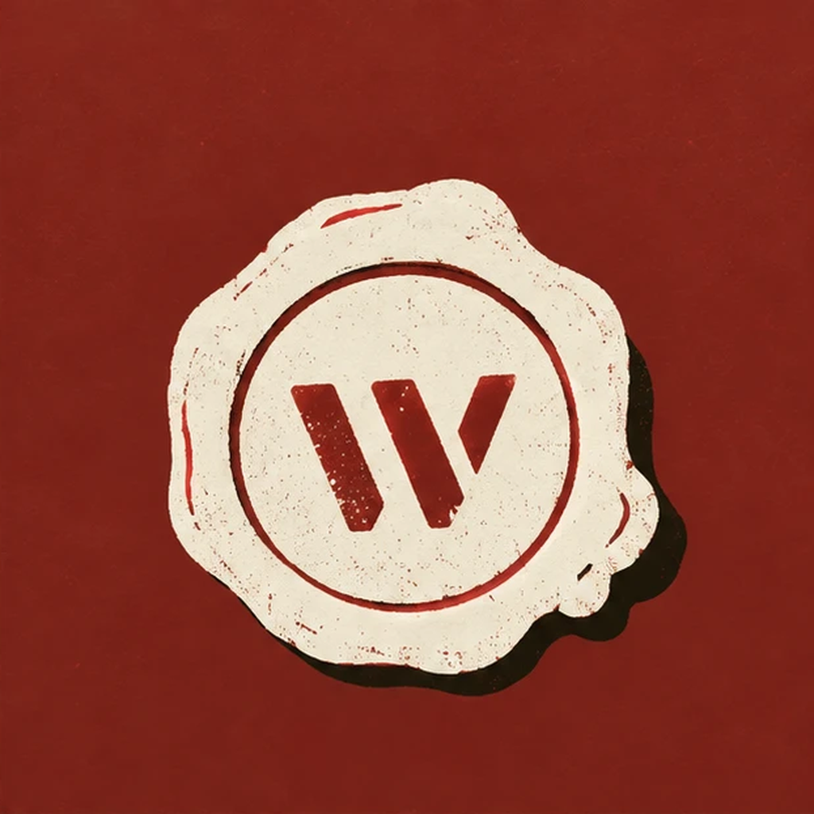
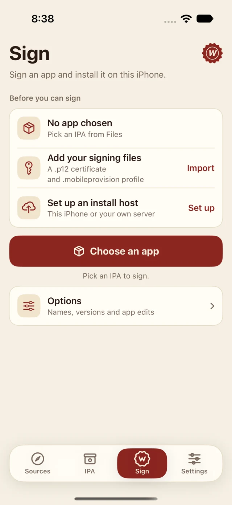
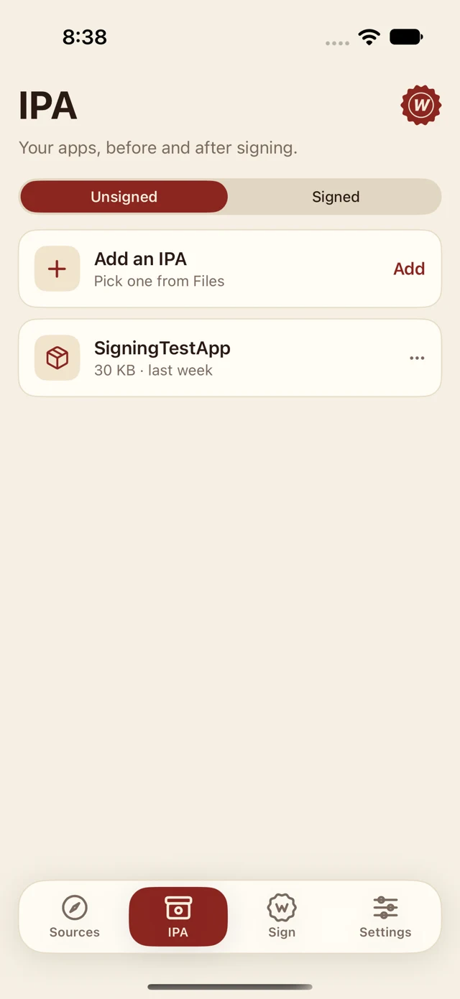
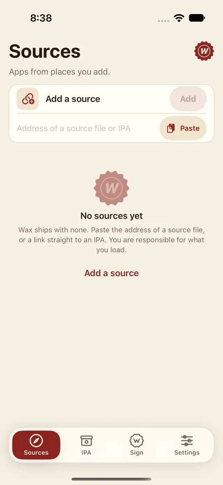

Find your apps.
Add a source you trust or a direct IPA link. Browse and download apps from your own collection of sources.
Sources
WaxAn iPhone app, for your iPhone apps.
Import an app. Sign it with your own certificate. Install it on the same phone.
Wax puts the everyday steps up front and the extra options where you need them.

01 / The everyday essentials
Four sections. A clear place for each part of the job.
Add a source you trust or a direct IPA link. Browse and download apps from your own collection of sources.
SourcesYour unsigned and signed IPAs have their own shelves. Inspect an app’s details, keep a signed copy, or install a saved signed app again.
IPA libraryChoose an IPA and your signing identity. Wax checks the app and profile before handing the signed app to iOS for installation.
SignKeep certificates, provisioning profiles and your install host in Settings. Optional edits sit under Options when you need them.
SettingsA little more room to breathe
Warm colors, readable rows, and the next action in reach. Built to feel at home on iPhone, in light or dark.
See how it worksSimulator previews. Your apps and sources are yours to add; Wax includes no app catalog.


02 / Your first install
Wax signs with files you bring. It does not issue signing certificates or provide apps.
Download the standard IPA below. It is unsigned, so your existing signing tool must sign and install Wax first. Opening an IPA in Files does not install it.
Choose your downloadOpen Settings → Certificates & profiles. Import your certificate, enter its password, then import the matching provisioning profile.
In Sign, tap Choose an app and pick an IPA. Choose the certificate you imported. Open Options only if you want to edit the app.
Choose This iPhone for an on-phone install. Official releases include the default host setup. If Wax needs more, open Settings → Install host.
Understand the host choicesTap Sign & Install, review the checks, then Continue to install when allowed. Accept the iOS prompt and keep Wax on screen while iOS takes the file. Open the installed app to confirm it works.
03 / Take it with you
Choose the everyday app. Keep the toolkit optional.
Import, sign, install, saved apps and sources. Extra app edits are tucked under Options. No probes, test buttons or developer screens.
Download WaxVersion 0.16.3 · Unsigned IPA · iOS 17+
SHA-256 checksumFor testing & tinkering
The developer build adds a test app, import logs, compression tuning and technical signing controls.
It installs beside Wax with separate files and settings. Import your signing files into each copy you use.
Download Wax DevVersion 0.16.3 · Unsigned IPA · iOS 17+
SHA-256 checksumBoth downloads need your existing sideloader. Want release notes or a newer build? Check the latest release
The last step, explained
A host delivers the signed file to iOS. It does not replace your signing certificate or make an incompatible profile work.
Wax serves the signed app from your phone. You do not run a server. Official builds use a public certificate feed for this delivery connection; its renewal services and your network must cooperate.
Deliver through your own HTTPS server. Choose this if you already run a host or need another route. Server setup guide
Use an S3-compatible bucket you own. This route has limited validation and has not been verified against a real storage provider.
An iOS prompt or a successful handoff does not confirm installation or launch. Always open the installed app to check.
04 / A few good answers
Keep your original IPA. Most setup problems do not need a fresh start.
Report a problemWax is free and open source under Apache-2.0. Once you have sideloaded Wax, it can sign and deliver apps from your iPhone without a Mac or a server you operate. Your signing certificate and profile are separate requirements; Wax does not sell or supply them.
Wax targets iOS 17 and later. Device testing has covered an iPhone 17 on iOS 27.2; that does not guarantee every device, profile or app. The profile must match the signing certificate and include your device. Ad Hoc over-the-air installation has worked in a device test; Development certificate installs have had mixed results. Certificate readiness alone does not prove an app will install.
That depends on the certificate, provisioning profile and Apple’s rules, not Wax. Free developer provisioning commonly lasts 7 days. Other profiles have their own expiry dates and can be revoked. Check your actual profile rather than assuming a fixed lifetime.
Open Options for the edits available in your build, such as an app’s name, bundle identifier, version or icon. Wax Dev exposes technical controls, including entitlements, property-list edits, per-app profiles, library injection and compression tuning. An edit can affect app behavior or installation eligibility; start with the original settings.
iOS needs an HTTPS delivery connection. “This iPhone” uses a certificate for a name that points back to the phone. That delivery certificate is shared and public; it is different from your private app-signing certificate. Read the security model.
Keep Wax on screen during delivery. Check that your profile includes this iPhone and matches the selected certificate. If the download never starts, try another network or host; some networks rewrite the install name’s DNS answer. Export a retained signed IPA or retry saved-app installation when available. Do not delete your signing files as a first troubleshooting step.
You add them. Wax supports AltStore/Feather-style source links and direct IPA links, but ships with no sources or app catalog. Only load apps and sources you trust and are entitled to use. Signing an IPA does not prove that its contents are safe.
Open a GitHub issue with your Wax version, iPhone model, iOS version, the step that failed and the exact error. Reports are public. Never attach certificates, profiles, passwords, tokens or private IPA files. Report security vulnerabilities privately using GitHub’s vulnerability report.
Yours stays yours
Wax keeps your app-signing certificate and private key in the iPhone Keychain, on this device. Provisioning profiles stay in app-private storage, excluded from iCloud backups.
Wax has no ads, accounts or tracking. Signing happens on-device; app downloads, certificate-feed checks and the install host you choose use network connections. A server or bucket you select receives the file for delivery.
This website uses no analytics, cookies, remote fonts or third-party scripts. GitHub hosts the page and downloads and handles those requests under its own policies.
Read the source